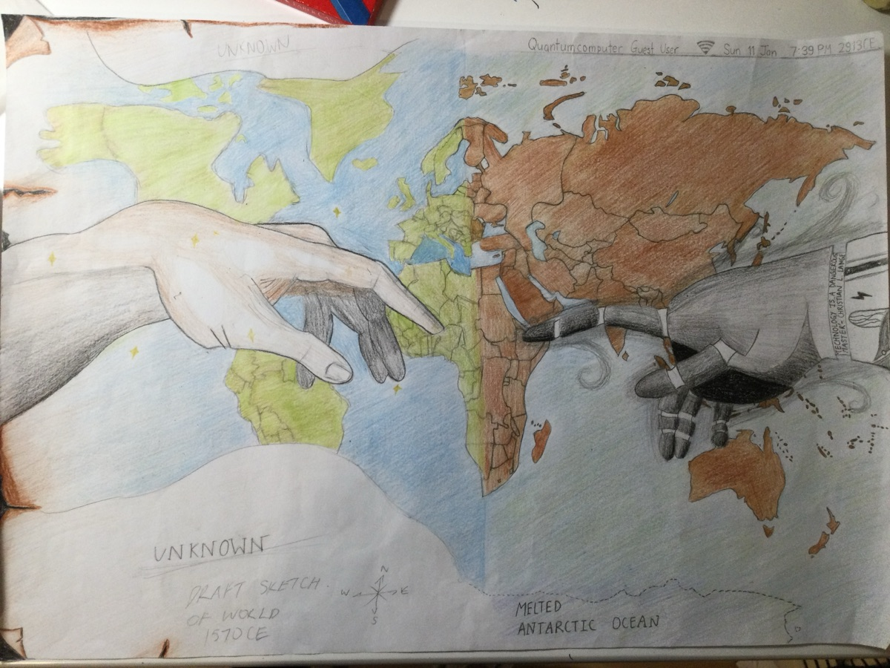

The name, Paperclips, is a bit of an inside joke in the AI safety world (the nerdy bit below explains it). It points to one example of AI going wrong in ways nobody intended. AI will impact society in many more ways, like power concentration and possible loss of democracy.
The joke comes from a thought experiment called the paperclip maximiser. If an AI were asked to maximise the number of paperclips in the world, it could plausibly try to gain control over the world, since more control and resources would let it make more paperclips. This illustrates instrumental convergence: the idea that an AI pursuing almost any goal might take the same in-between steps, like acquiring resources and control, whatever its final goal is.
I liked the name because it sounds quirky rather than technical, while still nodding to people who know the reference. I didn't want "AI Safety Society" because ASS sounds weird and I wasn't sure the USU would accept it. But also because "AI safety" makes it sound technical, and I believe the door to AI safety should be open to everyone.
When I was thinking of a logo, I wanted something human, and that made me think of Anna Goldsworthy's essay The God We Made. I was reminded of a drawing I made in 2021 about the future, inspired by Michelangelo's The Creation of Adam.

[W]e need the friction of other people — stubborn, surprising, opaque — to challenge us in our thinking. We need the socialisation and testing of ideas, not just against algorithms but against other minds. As the machines skitter ahead of us, learning all that is learnable about the universe, perhaps our central concern returns to something closer to hand. Perhaps we go to universities, finally, to find ourselves there.
– Anna Goldsworthy, The God We Made (Black Inc., 2026)
I realised that AI safety is, in some cases, more about people than technology, yet there was little collaboration between artsy people and techy people. I was frustrated that there were so few voices from outside tech in the field.
We need different opinions, and I think getting a wider range of voices, especially from the arts and social sciences, will really help solve AI's societal challenges. You shouldn't need to speak Python to be part of AI safety. This society is a space where you can get your foot in the door.
– Vanessa